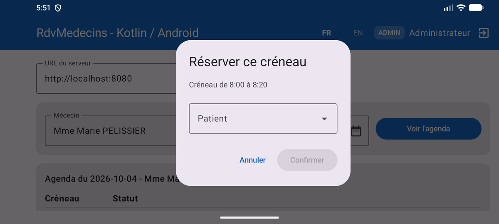
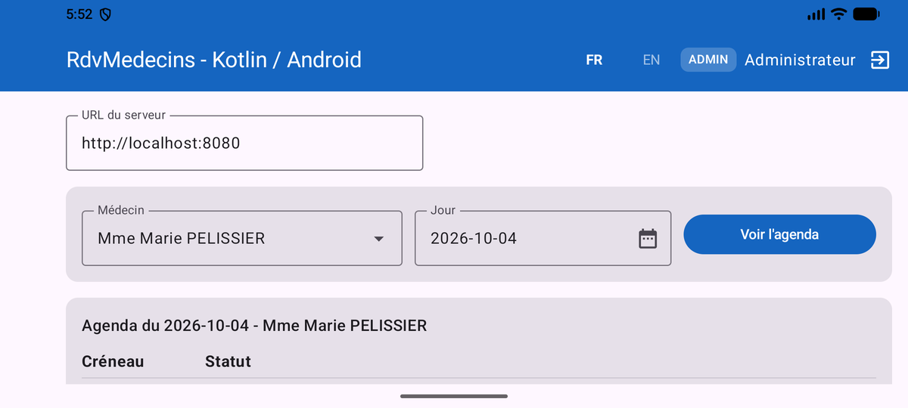
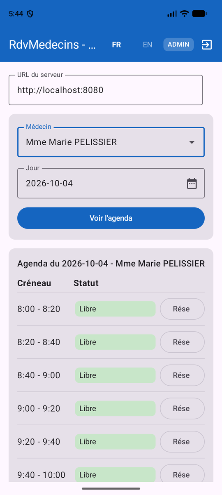

6. Chapter 5 - Running the App: Emulator, Phone, APK
6.1. A Single Target: Android
Chapter 5 of the Flutter course showed how a single source code compiles to three target families: mobile, desktop, and web. That’s not the case here: the client in this document is an Android app—and only Android. Instead, it uses the platform’s tools and libraries directly ([Gradle], [Android Studio], [ViewModel], [SharedPreferences]...), without an abstraction layer. The last section of this chapter explains what it would take to also target iOS, the desktop, and the web.
The commands in this chapter use the [adb] tool and the Gradle wrapper. On Windows, if the [platform-tools] and [emulator] folders from SDK are not in [PATH], replace [adb] with [& "$env:LOCALAPPDATA\Android\Sdk\platform-tools\adb.exe"] (see Chapter 1).
6.2. Emulator Target
This is the target used throughout Chapter 4. From Android Studio: select the emulator from the list of devices, then choose [Run]. From the command line, in the project folder:
6.2.1. The network pitfall: localhost no longer refers to the PC development device
It’s LE—an important detail to know for mobile development, unrelated to Kotlin or Compose: [localhost] (or [127.0.0.1]), in the “Server URL” field, refers to the machine running the code. However, the emulator is a machine with the ID VIRTUELLE, which is distinct from the development machine with the ID PC where the server [NestJS] is running, even though both appear to “be on the same computer.” There are two solutions:
- the special address [http://10.0.2.2:8080]: specific to the official Android emulator, it is redirected to the host machine’s [localhost]. This is the default value for the “URL server” field (see [SettingsService.kt]);
- the command [adb reverse tcp:8080 tcp:8080], followed by URL and [http://localhost:8080]. [adb reverse] creates a tunnel: any connection from the device to SON on port 8080 is forwarded by [adb] to port 8080 on the computer. The tunnel disappears when the emulator stops (or when the [adb] server restarts): you must then rerun the command.
The first solution is the simplest. However, on the computer used to write this document, it did not work: the connection to [10.0.2.2:8080] failed after the 10-second timeout, even though the server responded normally on [localhost]. This type of problem depends on the network configuration of PC (firewall, VPN, virtualization software): [adb reverse] bypasses this issue, since traffic then passes through [adb] rather than through the emulator’s virtual network. The message displayed by the app (“Incorrect login or password.”) doesn’t provide much insight; the exact cause can be found in the Android log, thanks to the client’s calls to [Log.w(...)] (the [Logcat] tab in Android Studio, filtered for [RdvMedecins], or the [adb logcat -s RdvMedecins] command):
The commands [adb reverse], URL, and [http://localhost:8080] (followed by [SettingsService]) resolved the issue: this is the configuration used for all screenshots in Chapter 4.
6.3. Target: Phone
The phone set up in Chapter 1 (developer options, debugging USB) appears in [adb devices] and in the Android Studio device list: It works exactly like the emulator ([Run] or [gradlew installDebug]). Only the server’s URL changes:
- phone connected via cable USB: the command [adb reverse tcp:8080 tcp:8080] also works with a real phone, and the URL and [http://localhost:8080] then reach the PC server via the cable. This is the simplest solution;
- Phone on the same Wi-Fi network as the PC: use the IP or LOCALE address of the PC on that network (for example, [http://192.168.1.48:8080]; the [ipconfig] command displays it in Windows), never [localhost] or [10.0.2.2], as both refer to the phone itself in this case. The firewall on the PC must then allow incoming connections on port 8080 (Windows prompts you to do this when you first launch Node.js).
The [NestJS] server listens on all network interfaces of the PC ([0.0.0.0]): no changes are needed on its end.
6.4. Two mobile-specific restrictions
6.4.1. Unencrypted HTTP traffic
Starting with Android 9 (API 28), by default, an app can no longer communicate in “plaintext” HTTP ([http://], unencrypted): only [https://] is allowed. Since the server for this course listens on plain HTTP, the client’s manifest declares the [android:usesCleartextTraffic="true"] exception (see Chapter 4). Without it, any request fails with the [CLEARTEXT communication to 10.0.2.2 not permitted by network security policy] exception.
This authorization applies to TOUS servers. A more granular configuration is possible, using a [res/xml/network_security_config.xml] file that allows plaintext HTTP only for certain hostnames:
The file is declared in the manifest using the [android:networkSecurityConfig="@xml/network_security_config"] attribute of the [<application>] tag. This document does not use it: the IP address of a PC on a Wi-Fi network is not known in advance. In both cases, these settings apply only to development: in production, the server would be exposed at [https://] (for example, behind a “reverse proxy” such as Nginx), which would render any exception unnecessary.
6.4.2. Network access permission
Without the [<uses-permission android:name="android.permission.INTERNET" />] line in the manifest, the first request fails, throwing a [SocketException: socket failed: EPERM (Operation not permitted)] exception (or a [SecurityException: Permission denied (missing INTERNET permission?)] exception when the URL contains a hostname). This is a common oversight: the Android Studio project template does not include it.
6.5. Screen rotation
Rotating the phone (or the emulator, using the rotation buttons on its sidebar) triggers DÉTRUIT and then RECRÉE in the activity (see Chapter 3). The client handles this thanks to three choices made in Chapter 4:
- the services are built by [RdvMedecinsApplication], which is not recreated;
- the screen state (doctors, patients, calendar, slot currently being booked) is stored in [AppViewModel], which Android retains;
- minor interface states (login being entered, selected doctor and day, patient selected in the dialog box) are stored in [rememberSaveable].
The following screenshots were taken with the booking dialog box open: first in landscape mode, then back in portrait mode. The dialog box, the calendar, and the selected doctor and day are still there:


In landscape mode, the screen is over 600 dp wide: the title bar displays the full title and the user’s name, and [DoctorDayPicker] arranges its three elements on a single line:

To assess the value of these choices, we can try the opposite: in [App.kt], replace [val vm = viewModel { AppViewModel(auth, rdv) }] with [val vm = remember { AppViewModel(auth, rdv) }]. After a rotation, the calendar disappears and the search must be performed again: [remember] does not survive the recreation of the activity.
6.6. A narrow screen: the layout trap
A phone in portrait mode is only about 400 dp wide. The first version of [AgendaView.kt], like that of the Flutter client, was tripped up by this width. Each row of the calendar divided the available width among its three columns with fixed weights—30% for the time, 45% for the status, and 25% for the button ([Modifier.weight(0.25f)]). On the phone, 25% of the row wasn’t enough for the label “Reserve,” which was truncated to “Res”:


The correction (screenshot on the right; see [AgendaView.kt] in Chapter 4): the button no longer has a weight and takes up the width of its text; the schedule has a fixed width; the status takes up the remaining width ([Modifier.weight(1f)]). Two rules follow from this, the same as for the Flutter client:
- Never assume a width: either let an element take on the size of its content, or check the actual available width ([BoxWithConstraints], [LocalConfiguration.current.screenWidthDp]) to choose a layout;
- Test early on a narrow screen, and in both languages: the English labels (“Book,” “Cancel”) are shorter than the French labels, and a bug may only appear in one of the two.
6.7. Generate a APK
[gradlew assembleDebug] (Chapter 1) generates [app/build/outputs/apk/debug/app-debug.apk], a “debug” app: signed with a development key automatically generated by Android Studio, it can be installed on an emulator or a phone ([adb install app-debug.apk]), but cannot be published on the Play Store. For actual distribution:
A production version must be signed with a personal key, created once and for all and kept safe: Android Studio provides the [Build / Generate Signed App Bundle or APK...] menu for this purpose. The Play Store also requires an icon, a privacy policy... and a server at [https://].
6.8. But what about iOS—desktop and web apps? Kotlin Multiplatform
The Flutter client in the course generated mobile, desktop, and web apps from a single codebase. The equivalent exists in the Kotlin ecosystem: [Kotlin Multiplatform] (KMP) allows you to share Kotlin code between Android, iOS, desktop (JVM), and the web, while [Compose Multiplatform], derived from JetBrains, extends Jetpack Compose to these same targets. Porting the client in this document would primarily involve replacing Android-specific libraries with cross-platform equivalents:
- [OkHttp] → [Ktor Client], the cross-platform client HTTP derived from JetBrains;
- [SharedPreferences] → a cross-platform key-value storage library (for example, [DataStore], which is now cross-platform);
- the Android folder [assets/] → Compose Multiplatform resources;
- [android.util.Log], [Handler] → their cross-platform equivalents (or coroutines on [Dispatchers.Main]);
- the Application class and the activity remain, but only for the Android target: each target has its own entry point.
@Composable functions, the [@Serializable] classes, coroutines, and even the ViewModel (available on multiplatform) would be retained almost as-is. This port is beyond the scope of this document.
6.9. Summary table
- Android emulator - [Run] or [gradlew installDebug] - URL from the server: [http://10.0.2.2:8080], or [adb reverse tcp:8080 tcp:8080] followed by [http://localhost:8080];
- landline phone USB - [Run] or [gradlew installDebug] - URL: [adb reverse tcp:8080 tcp:8080], then [http://localhost:8080];
- Wi-Fi phone - [Run] or [gradlew installDebug] - URL: local address IP of PC, port 8080 open in the firewall;
- in all cases: [INTERNET] permission and authorization for HTTP in plain text in the manifest;
- Distribution: [gradlew assembleRelease] (APK) or [bundleRelease] (Play Store), with a personal signing key.